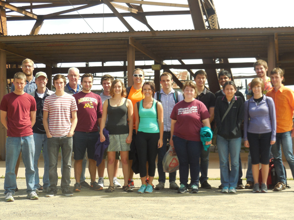
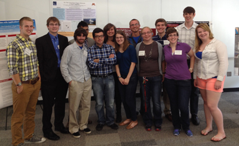
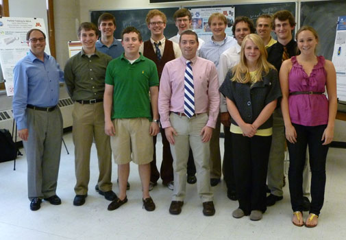

Phillip Dang (University of Maryland, Baltimore County) worked in Prof. Paul Crowell's spintronics laboratory and studied Co2MnSi and Co2FeSi Heusler alloy thin films.
Shannon Dulz (Missouri State University) worked with Prof. Prisca Cushman on a project the dark matter search (Super CDMS) experiment. Aditya Dhumuntarao (Arizona State University) worked with Prof. Joe Kapusta on applications of string- theoretic concepts to pure gauge theories. Kylie Hess (the Rose-Hulman Institute of Technology) worked with Prof. Roger Rusack to build a cosmic ray detector for CERN CMS detector development. Katelyn Koiner (University of North Dakota) worked with Prof. Lucy Fortson on the presence of bar galaxies using optical and infrared wavelengths. Matthew Libersky (Valparaiso University) worked with Prof. Allen Goldman studying properties of strontium iridate. Bryan Linehan (Saint John's University) worked with Prof. Marvin Marshak on determining the NOvA detector resolution from the cosmic ray moon and sun shadow. Wilson Lough (Northern Arizona University) worked with Prof. Vuk Mandic on improving signal processing techniques involved in detecting stochastic gravitational-wave background. Joseph Mullin (University of California Santa Barbara) worked with Prof. Gregory Pawloski to determine the sensitivity of the MINOS detector to neutrino flavor oscillations. Austin Riedl (University of Wisconsin - Eau Claire) worked with Prof. Michael Zudov on the effect of low-temperature illumination on magnetotransport in the 2D electron gas. Timothy Schuler (SUNY College at Buffalo) worked with Prof. John Broadhurst, on the sensitivity of the human brain to frequency perturbations in sound. Sadie Tetrick (Augsburg College) worked with Prof. Cynthia Cattell on the Earth's radiation belts during geomagnetic storms. Miranda Thompson (Harvey Mudd College) worked with Prof. Jim Kakalios on nanocrystalline thin films.
Alexandra Boldin (Macalester College, Minnesota) worked with Professor Crowell.
Joshua Hiltbrand (University of Minnesota Duluth) worked with Professor Rusack.
Luke Horstman (Bethel University, Minnesota) worked with Professor Kubota.
Kathryn Jacobson (College of St. Benedict, Minnesota) worked with Professor Broadhurst.
Brenda Knauber (St. Cloud State University, Minnesota) worked with Professor Halley.
Devin Mahon (Rice University, Texas) worked with Professor Marshak.
Charlotte Martinkus (Macalester College, Minnesota) worked with Professor Skillman and Research Associate Kristen McQuinn.
Erik Navarro (California State University, Chico) worked with Professor Noireaux.
Mitchell Patzer (University of Minnesota, Morris) worked with Professor Terry Jones.
Devin Roerich (University of North Dakota) worked with Professor Vinals.
Samantha Thrush (Ohio University) worked with Professor Mandic.
Joshua Wolanyk (Gustavus Adolphus College, Minnesota) worked with Professor Zimmermann.
Iakov Boyko (Hillsdale College, Michigan) worked with Professor Crowell on Anisotropies, Ferromagnetic Resonance and Spin Damping in Co2MnSi/GaAs and Fe/GaAs Heterostructures
Elizabeth Butler (Northern Michigan University) worked with Professor Hanany on Analyzing Timestamps for the EBEX Experiment
Spencer Diamond (Dartmouth College) worked with Professor Pawloski on Processing and Analyzing NOvA Far Detector Cosmic Data
Charles Godfrey (University of Wisconsin-Madison) worked with Professor Noireaux on E. coli cell growth and division: Self-replication of a model organism
Austin Howes (Drake University, Iowa) worked with Professor Kakalios on AC Conductivity of N-Typed Doped Mixed-Phase Amorphous Silicon Films
Eric Johnson (New York University-Abu Dhabi) worked with Professor Vinals on an examination of the weighted ensemble approach on modeling delayed stochastic genetic regulatory systems
Anthony Lefeld (University of Notre Dame, Indiana) worked with Professor Mandic on Adjusting STAMP code for long gravitational-wave transients
Nicholas Lewellyn (Saint Cloud State University, Minnesota) worked with Professor Dahlberg on Measuring Frequency Dependence of AC Magnetic Susceptibility
Kelsey Meinerz (Marquette University, Wisconsin) worked with Professor Mueller on Probing the Point Spread Function
Evan Moen (University of North Dakota) worked with Professor Halley on dynamics of water on a magnetite surface
Maggie Molter (Macalester College, Minnesota) worked with Professor Fortson on VHE Observation of Distant Soft Blazars
Michael Mullen (University of North Dakota) worked with Professor Broadhurst on Spin Casting a Mirror for Astrophysical Observations: Design and Construction of an Air Bearing
Zachary Pace (University at Buffalo, The State University of New York) worked with Professor Fortson on Galaxy Zoo 2: Characterizing the Bimodal Color-Magnitude Distribution
Amanda Bowers (Linfield College, Oregon) worked with Professor Pawloski on the detector module testing for the NOvA neutrino detector group.
Matthew Caplan (University of West Virginia) worked with Professor Skillman on Photometry of Local Group Dwarf Galaxies.
James Delles (California State University-Chico) worked with Professor Crowell on Kerr Microscopy of Perpendicular Spin Currents in Metallic Nanowires.
Rachael Jensema (Valparaiso University, Indiana) worked with Professor Tom Jones on developing new visualization techniques for computational astrophysics.
Lucas Johns (Reed College, Oregon) worked with Professor Mandic on the detection of gravitational-wave emission from an accretion-disk instability.
Kevin Kelly (University of Notre Dame) worked with Professor Heller on the data analysis software for the NOvA neutrino detector.
Darren Mareskas-Palcek (Eckerd College, Florida) worked with Professor Cronin-Hennessy on the data analysis of the MINOS neutrino detector.
Rebecca McAuliffe (Marquette University) worked with Professor Halley on experimental project related to superfluid properties of liquid Helium.
Timothy O'Brien (University of Notre Dame) worked with Professor Rudnick on fitting of the Faraday rotation data of polarized astrophysical signals.
Ross Siegel (Nothern Arizona University) worked with Professor Goldman on electrostatic doping of irregular Mott insulators.
Amanda Bowers (Linfield College, Oregon) worked with Professor Pawloski on the detector module testing for the NOvA neutrino detector group.
Matthew Caplan (University of West Virginia) worked with Professor Skillman on Photometry of Local Group Dwarf Galaxies. James Delles (California State University-Chico) worked with Professor Crowell on Kerr Microscopy of Perpendicular Spin Currents in Metallic Nanowires. Rachael Jensema (Valparaiso University, Indiana) worked with Professor Tom Jones on developing new visualization techniques for computational astrophysics. Lucas Johns (Reed College, Oregon) worked with Professor Mandic on the detection of gravitational-wave emission from an accretion-disk instability. Kevin Kelly (University of Notre Dame) worked with Professor Heller on the data analysis software for the NOvA neutrino detector. Darren Mareskas-Palcek (Eckerd College, Florida) worked with Professor Cronin-Hennessy on the data analysis of the MINOS neutrino detector. Rebecca McAuliffe (Marquette University) worked with Professor Halley on experimental project related to superfluid properties of liquid Helium. Timothy O'Brien (University of Notre Dame) worked with Professor Rudnick on fitting of the Faraday rotation data of polarized astrophysical signals. Ross Siegel (Nothern Arizona University) worked with Professor Goldman on electrostatic doping of irregular Mott insulators.
This year, student research projects covered a particularly broad range of topics, including biophysics, space physics, observational astronomy and cosmology, experimental high energy and astroparticle physics, theoretical high-energy physics, as well as experimental condensed matter physics with investigations into magnetism, superconductivity and spintronics.
Benjamin Absher, junior (Washington and Lee University) worked with Prof. Vincent Noireaux on modeling of protein synthesis in a cell-free Escherichia Coli system.
Emily Dvorak, junior (University of Wisconsin, River Falls) worked with Prof. J. Mans on developing protocols to isolate electron signals in the Compact Muon Solenoid at the Large Hadron Collider.
Christopher Frye, junior (University of Central Florida) worked with Prof. J. Mans on developing procedures for identifying electromagnetic showers in the Forward Hardon Calorimeter at the Large Hadron Collider.
Peter Hansen, junior (University of Nebraska, Lincoln) worked with Prof. J. Mueller on quantifying protein expression distributions in cell populations.
Rachel Mensch, sophomore (Washington and Lee University), worked with Prof. James Kakalios, investigating the variations in the optical absorption spectra of thin film mixed phase semiconductors as a function of the nanocrystalline concentration.
Noah Mitchell, junior (St. Olaf University), worked with Prof. Evan Skillman, determining star formation rates in a survey of nearby starburst dwarf galaxies.
Darrell Montonera, junior (Gordon College), worked with Prof. William Zimmermann studying the influence of an externally applied electric field on the condensate fraction in superfluid He II.
Jonathan Morris, junior (University of Minnesota Twin Cities), worked with Prof. Vincent Noireaux, characterizing diffusion processes in living cells, using fluorescence microscopy.
Brent Perreault, junior (Concordia College), worked with Prof. Ken Heller, working on the particle tracking algorithm for the NuMI off-axis electron-neutrino NOvA experiment.
Christopher White, sophomore (Rice University), worked with Prof. J. Woods Halley, performing simulations of condensate-mediated transmission in superfluid helium.
Andrew Zabel, junior (Bethel University), worked with Prof. Marvin Marshak, discovering a "moon shadow" in the histogram of neutrino-induced muon events recorded in the MINOS far detector at the Soudan Underground Physics Laboratory.
Talia Clark junior (Barnard College) worked with Prof. Ken Heller on Physics Education project, assessing the effectiveness of various techniques designed to improve students' problem solving skills.
Anne Gambrel, junior (University of Tulsa) worked with Prof. Shaul Hanany, on developing a Focal Plane Equalizer for EBEX, a balloon-borne polarimeter designed to study the Cosmic Microwave Background Radiation.
Chris Granstrom-Arndt, junior (University of Minnesota Twin Cities) worked with Prof. J. Woods Halley on the creation and detection of low temperature helium vapor pulses projected through a thin film of superfluid helium, to study the condensate interactions.
Brian Hake, junior (Point Loma Nazarene University) worked with Prof. Terry Jones on developing an optical polarimeter instrument control system, used to study light polarization of celestial objects.
Trevor Hutchinson, junior (Lewis and Clark College) worked with Prof. James Kakalios, studying the thermal equilibration properties of mixed-phase amorphous/nanocrystalline silicon thin films as a function of nanocrystalline concentration.
Zofia Kaminski, junior (University of Dallas) worked with Prof. Joachim Mueller on tracking fluorescent microspheres in order to study single protein dynamics.
May-Ling Li, junior (Reed College) worked with Prof. William Zimmermann on the effects of electric fields on the lambda transition of superfluid helium.
Paige Martin, junior (Harvard University) worked with Prof. Ken Heller, exploring a passive cooling method for electronics heat dissipation for the NOvA experiment detector.
Eric Petersen, junior (Michigan Technological University) worked with Prof. Evan Skillman, analyzing the spectral signature of cold neutral hydrogen in low metallicity galaxies.
Peter Rosenberg, junior (SUNY, Geneseo) worked with Prof. Joe Kapusta on a theoretical nuclear physics project studying the O(4) Linear Sigma model with a bosonic chemical potential.
Rebecca Ruckdashel, junior (Cornell University) worked with Prof. Alex Kamenev, studying the Lotka-Volterra model for population density oscillations.
Joseph Sobek, junior (Winona State University) worked with Prof. John Wygant on a space physics project, studying surface waves in the current sheet of Earth's geomagnetic tail.
Joshua Sobrin junior (Fordham University) worked with Prof. Shaul Hanany, designing a payload recovery system for the EBEX balloon-borne polarimeter experiment.
Natalie Weisse junior (University of Dallas) worked with Prof. Vincent Noireaux on an experimental biophysics project, studying expression and manipulation of trans- membrane proteins for the development of a functioning artificial cell.
Bradley Christensen, junior (University of Rochester) worked with Prof. Prisca Cushman on the Cryogenic Dark Matter Search experiment.
Sean Dobberstein, junior (Northern Michigan University) worked with Prof. Evan Skillman, on an observational astrophysics project, developing a catalog of HII regions of nearby spiral galaxies.
Matthew Drake, junior (University of Massachusetts, Amherst) worked with Prof. William Zimmerman, studying the properties of the lambda-transition in superfluid helium-4.
Eric Dzienkowski, junior (Rensselaer Polytechnic Institute) worked with Prof. Daniel Cronin- Hennessy on developing detectors for the NOvA project to study neutrino oscillations.
Grace Elwell, junior (Carelton College) worked with Prof. Vuk Mandic, on the Cryogenic Dark Matter Search experiment.
Vanessa Engquist, junior (University of Nebraska, Kearney) worked with Prof. John Wygant on analyzing the influence of interplanetary magnetic fields on the auroral kilometric radiation.
Aaron Feickert, junior (North Dakota State University) worked with Prof. Jeremy Mans developing new algortihms to study particle decays in the Compact Muon Solenoid at the Large Hadron Collider.
Kathleen Foote, junior (Providence College) worked with Prof. Ken Heller, on a Science Education program, analyzing gender differences in performance in Introductory Physics courses.
Jon Graves, junior (University of Nebraska, Omaha) worked with Prof. Yong-Zhang Qian on a theoretical nuclear astrophysics project, simulating the shock front dynamics during supernova explosions.
Mark Pepin, junior (Creighton University) worked with Prof. Marvin Marshak analyzing cosmic ray shower data recorded by the Soudan II underground detector.
Christopher Pierse, junior (St. Louis University) worked with Prof. Vincent Noireaux on an experimental biophysics project, studying gene expression kinetics for the development of a functioning artificial cell.
Katherine Reeves, junior (University of Minnesota, Twin Cities) worked with Prof. Daniel Cronin-Hennessy on an experimental high-energy physics project, studying photon energy resolution in the BES-III Electromagnetic Calorimeter.